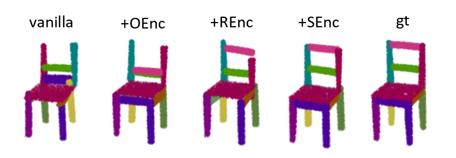
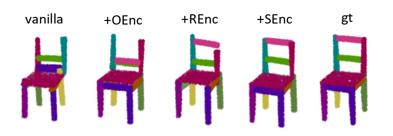
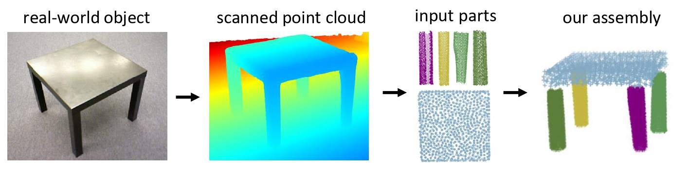

Effect of Encodings
Visualizations of assembly results when enhancing knowledge by adding new encoding patterns in a stepwise way.
We introduce SPAFormer, an innovative model designed to overcome the combinatorial explosion challenge in the 3D Part Assembly (3D-PA) task. This task requires accurate prediction of each part's poses in sequential steps. As the number of parts increases, the possible assembly combinations increase exponentially, leading to a combinatorial explosion that severely hinders the efficacy of 3D-PA. SPAFormer addresses this problem by leveraging weak constraints from assembly sequences, effectively reducing the solution space's complexity. Since the sequence of parts conveys construction rules similar to sentences structured through words, our model explores both parallel and autoregressive generation. We further strengthen SPAFormer through knowledge enhancement strategies that utilize the attributes of parts and their sequence information, enabling it to capture the inherent assembly pattern and relationships among sequentially ordered parts. We also construct a more challenging benchmark named PartNet-Assembly covering 21 varied categories to more comprehensively validate the effectiveness of SPAFormer. Extensive experiments demonstrate the superior generalization capabilities of SPAFormer, particularly with multi-tasking and in scenarios requiring long-horizon assembly.
Illustration of the combinatorial explosion challenge inherent in the assembly process. Specifically:
Illustration of overall end-to-end framework of SPAFormer.
Visualizations of assembly results when enhancing knowledge by adding new encoding patterns in a stepwise way.
Real-world experiment on table assembly.
Qualitative results and comparisons on the chair assembly task. Distinct colors within a single shape denote various parts of the chair, whereas consistent coloring in a row signifies identical parts. Our SPAFormer is able to identify and adhere to appropriate assembly patterns to ensure accurate assembly of structured objects.
@inproceedings{
xu2025spaformer,
title={{SPAF}ormer: Sequential 3D Part Assembly with Transformers},
author={Boshen Xu and Sipeng Zheng and Qin Jin},
booktitle={International Conference on 3D Vision 2025},
year={2025},
url={https://openreview.net/forum?id=kryphH8cJP}
}